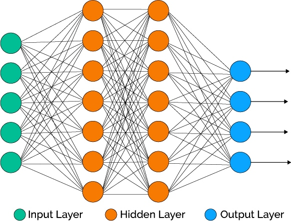

Нейронная сеть
— попытка с помощью математических моделей воспроизвести работу человеческого мозга для создания машин, обладающих искусственным интеллектом.
Искусственная нейронная сеть обычно обучается с учителем. Это означает наличие обучающего набора (датасета), который содержит примеры с истинными значениями: тегами, классами, показателями.
Неразмеченные наборы также используют для обучения нейронных сетей, но мы не будем здесь это рассматривать.
Например, если вы хотите создать нейросеть для оценки тональности текста, датасетом будет список предложений с соответствующими каждому эмоциональными оценками. Тональность текста определяют признаки (слова, фразы, структура предложения), которые придают негативную или позитивную окраску. Веса признаков в итоговой оценке тональности текста (позитивный, негативный, нейтральный) зависят от математической функции, которая вычисляется во время обучения нейронной сети.
Раньше люди генерировали признаки вручную. Чем больше признаков и точнее подобраны веса, тем точнее ответ. Нейронная сеть автоматизировала этот процесc
Искусственная нейронная сеть состоит из трех компонентов:
1.Входной слой;
2.Скрытые (вычислительные) слои;
3.Выходной слой.
Нейронные сети — одно из направлений в разработке систем искусственного интеллекта. Идея заключается в том, чтобы максимально близко смоделировать работу человеческой нервной системы — а именно, её способности к обучению и исправлению ошибок. В этом состоит главная особенность любой нейронной сети — она способна самостоятельно обучаться и действовать на основании предыдущего опыта, с каждым разом делая всё меньше ошибок.
Нейросеть имитирует не только деятельность, но и структуру нервной системы человека. Такая сеть состоит из большого числа отдельных вычислительных элементов («нейронов»). В большинстве случаев каждый «нейрон» относится к определённому слою сети. Входные данные последовательно проходят обработку на всех слоях сети. Параметры каждого «нейрона» могут изменяться в зависимости от результатов, полученных на предыдущих наборах входных данных, изменяя таким образом и порядок работы всей системы.
Предположительную карту развития нейронных сетей на 2016-2018 годы:
системы распознавания и классификации объектов на изображениях;
голосовые интерфейсы взаимодействия для интернета вещей;
системы мониторинга качества обслуживания в колл-центрах;
системы выявления неполадок (в том числе, предсказывающие время технического обслуживания), аномалий, кибер-физических угроз;
системы интеллектуальной безопасности и мониторинга;
замена ботами части функций операторов колл-центров;
системы видеоаналитики;
самообучающиеся системы, оптимизирующие управление материальными потоками или расположение объектов (на складах, транспорте);
интеллектуальные, самообучающиеся системы управления производственными процессами и устройствами (в том числе, робототехнические);
появление систем универсального перевода «на лету» для конференций и персонального использования;
появление ботов-консультантов технической поддержки или персональных ассистентов, по функциям близким к человеку.
Таким образом, нейроные сети нашли огромное применение для упрощения жизни. Огромное потребление приходится на производствах и разных видов предприятий. Это открытие позволило осуществить огромный прогресс в области нейросетей и предоставила абсолютно новые возможности. Нейронные сети активно применяюттся на данный момент и до сих пор эта система модернизируется.